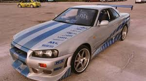

skyline gtr r34

O Nissan Skyline GT-R R34 é um carro esportivo lendário, conhecido pela sua tecnologia avançada, desempenho robusto e design icônico. É um carro de tração integral (AWD), equipado com o sistema ATTESA E-TS, que distribui a potência entre as rodas dianteiras e traseiras, proporcionando uma excelente aderência e manuseio.